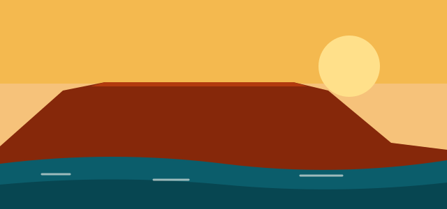

South Africa Highlights

South Africa sits at the southern tip of Africa, with coastlines on the Atlantic and Indian oceans. It offers wildlife, mountains, beaches, wine country and some of the continent's liveliest cities.
A quick overview
The country has three capital cities: Pretoria (executive), Cape Town (legislative) and Bloemfontein (judicial). It has eleven official languages, including Zulu, Xhosa, Afrikaans and English. Its landscapes range from semi-desert to subtropical coast and high mountain ranges.
Why visit
- Wildlife: see lions, elephants, rhinos, leopards and buffalo (the "Big Five") on safari.
- Scenery: from Table Mountain to the Drakensberg and the coastal Garden Route.
- Food and wine: the Western Cape winelands are among the best known in the southern hemisphere.
- History and culture: sites linked to Nelson Mandela and the story of the struggle against apartheid.
Best time to go
South Africa lies in the southern hemisphere, so seasons are the reverse of Europe and North America. The best time depends on what you want to do:
- Safari: the dry winter months, roughly May to September, when animals gather at waterholes and the bush is thinner.
- Cape Town and the Western Cape: the warm, dry summer, roughly November to March, is popular for beaches and hiking.
- Mild weather: spring and autumn can be pleasant in many regions.
The highlights at a glance
Pick a region to see a short summary:
Choose a region above.
Read more on the places to visit page.